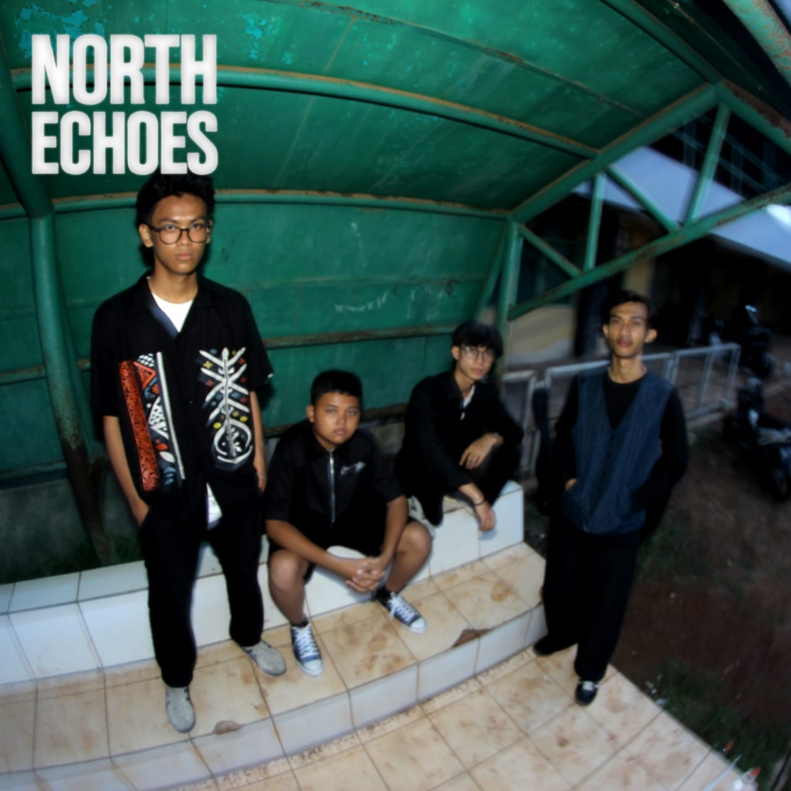
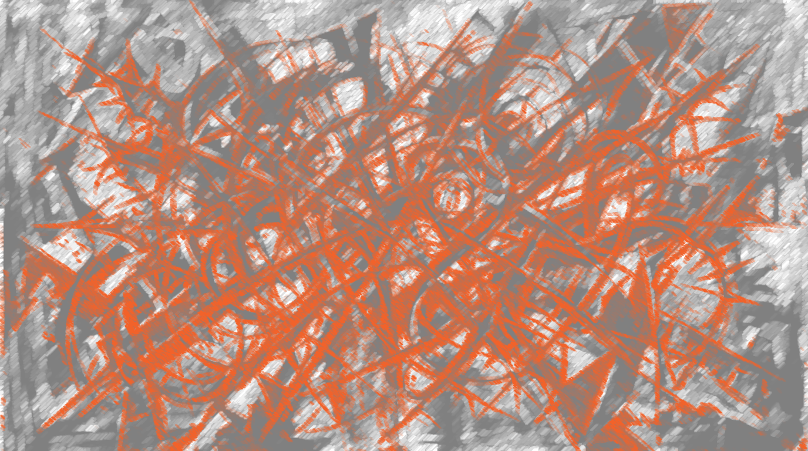
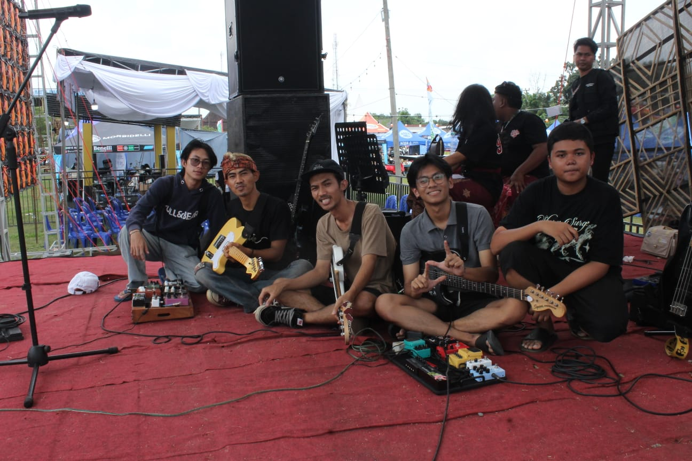

NISKALA
2025 · North Echoes
Single Pertama kami yang dirilis pada tahun 2025. Lagu ini menceritakan tentang perjalanan emosional percintaan seseorang yang rumit
Detail
Band Indie Yang Berasal Dari Lampung Utara
Energi panggung, lirik yang tajam, dan melodi yang mudah diingat. Bergabunglah dengan perjalanan kami.
Dengarkan MusikNorth Echoes terbentuk pada 2024. Menggabungkan unsur Alternatif dan Indie. Kami sudah merisilkan single pertama kami yang berjudul NISKALA pada tahun 2025.
2025 · North Echoes
Single Pertama kami yang dirilis pada tahun 2025. Lagu ini menceritakan tentang perjalanan emosional percintaan seseorang yang rumit
Detail
2026 · North Echoes
Kami Sedang Mempersiapkan Rilisan Mini Album yang akan dirilis pada tahun 2026 ini, dengan konsep yang lebih matang dan sound yang lebih segar. Nantikan karya terbaru kami!
Demo Album
2026 · North Echoes
Konser di beberapa kota. Cek halaman kontak untuk info lebih lanjut.
Info